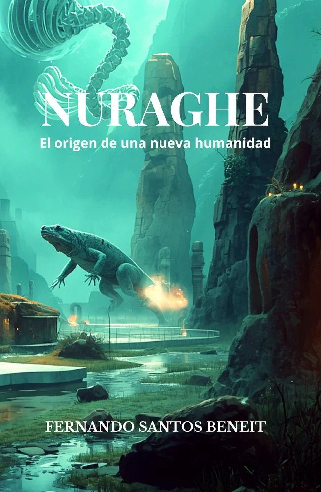
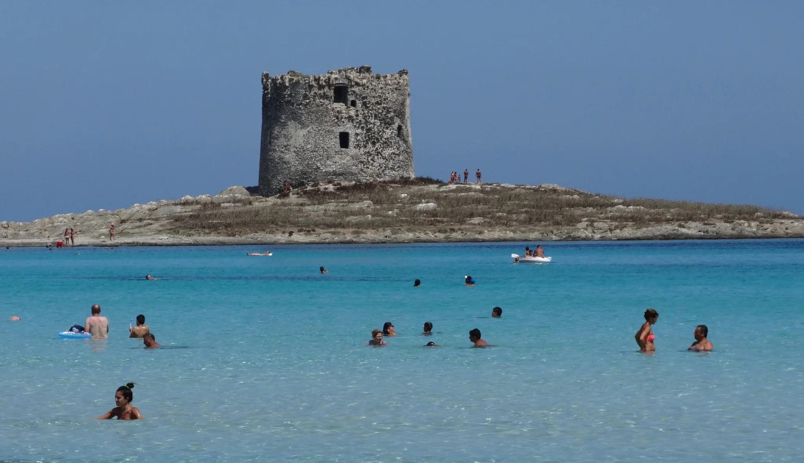

Pieza promocional
Día Internacional del Libro
Un homenaje a las historias, con su audio original.
La Tierra ha seguido
sin nosotros.
Dos humanos intentan reconstruir la humanidad. Un robot conserva la memoria de la civilización y descubre qué significa ser humano.
Fernando Santos Beneit
Una segunda oportunidad empieza con una pregunta.

Un lugar real en Cerdeña.
El comienzo de una historia imposible.
Mike se despertó sobresaltado, con la sensación viscosa de haber sido arrancado de algo que no sabía si era un sueño o un recuerdo.
Había visto un pozo.
No uno cualquiera, sino uno que respiraba humedad antigua, como si la piedra misma estuviera viva. Había oído gritos en idiomas que no comprendía, cuerpos chocando en la oscuridad, un golpe seco contra la roca. El llanto de una mujer. Sangre. Una linterna cayendo. Agua negra.
Y luego el dolor.
Un dolor animal, primitivo, como si algo tuviera que romperse para que otra cosa pudiera empezar.
Fragmento del prólogo de NURAGHE.
Continuar el viaje en Amazon ↗Tráiler principal definitivo · Reproducción al pulsar, con sonido.
Descubre el tráiler principal de la novela. Pulsa reproducir para verlo y escucharlo.
Un homenaje a las historias, con su audio original.
Una pieza breve del universo de NURAGHE, con su sonido original.
El autor y las piedras de Cerdeña.
Fotografías de su archivo personal.

Entre aguas cristalinas, paisajes mediterráneos y vestigios de antiguas civilizaciones, Cerdeña conserva una belleza que parece resistirse al paso del tiempo. Una isla donde naturaleza, historia y misterio se encuentran, y que inspiró el universo de NURAGHE.
La novela y la investigación,
en palabras de su autor.
Una entrevista con Fernando Santos Beneit en el periódico de su ciudad natal.
Leer la entrevista ↗Fernando Santos presenta NURAGHE en Vive! Salamanca. Entrevista del 13 de mayo de 2026 · 15 minutos.
Escuchar en Spotify ↗Un reportaje sobre el proyecto de investigación, con declaraciones de Fernando Santos-Beneit.
Leer el reportaje ↗Un gorila de montaña bebiendo en un río de Uganda: un vídeo del autor, grabado en 2022.
Breves piezas promocionales
para entrar en su atmósfera.
La mirada de un científico.
La libertad de una novela.

La novela está disponible en Amazon y también puede adquirirse directamente en la Librería Víctor Jara de Salamanca.
Conoce la Librería Víctor Jara · Vídeo promocional con sonido.
La respuesta empieza al abrir el libro.
Encontrar NURAGHE en AmazonBúsqueda por título y autor. Consulta las ediciones, los precios y la disponibilidad en Amazon.